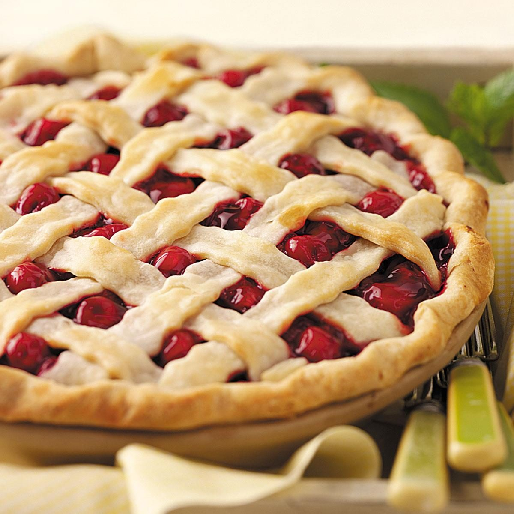

Cherry Pie

Description
This is the 1999 American Pie Council's National Pie Championship first-place winner in the Fruit and Berry Category.
Ingredients
- 2 cups all-purpose flour
- 1 cup shortening, chilled
- 1/2 cup cold water
- 1 pinch salt
- 2 cups pitted sour cherries
- 1 1/4 cups white sugar
- 10 teaspoons cornstarch
- 1 tablespoon butter
- 1/4 teaspoon almond extract
Steps
- Cut the shortening into the flour and salt with the whisking blades of a stand mixer until the crumbs are pea-sized. Mix in cold water by hand just until the dough holds together. Divide the dough in half and form it into two disks. Wrap in plastic and refrigerate until chilled through, 30 minutes to 1 hour.
- Roll out one disk of dough into a 11-inch circle. Line a 9-inch pie pan with pastry. Refrigerate until needed. Roll out the dough for the top crust, transfer it to a plate or baking sheet, and refrigerate.
- Preheat the oven to 375 degrees F (190 degrees C). Place a baking tray in the oven to preheat.
- Place the cherries, sugar, and cornstarch in a medium-sized non-aluminum saucepan. Allow the mixture to stand for 10 minutes, or until the sugar draws out the cherries' juices. Bring to a boil over medium heat, stirring constantly. Lower the heat; simmer for 1 minute, or until the juices thicken and become translucent. Remove pan from heat, and stir in butter and almond extract. Allow the filling to cool to lukewarm. Pour the filling into the pie shell. Cover with top crust, crimp the edges to seal, and cut vents for steam.
- Bake in a preheated 375 degree F (190 degree C) oven on the baking tray for 45 to 55 minutes, or until the crust is golden brown. Allow to cool for several hours before slicing.